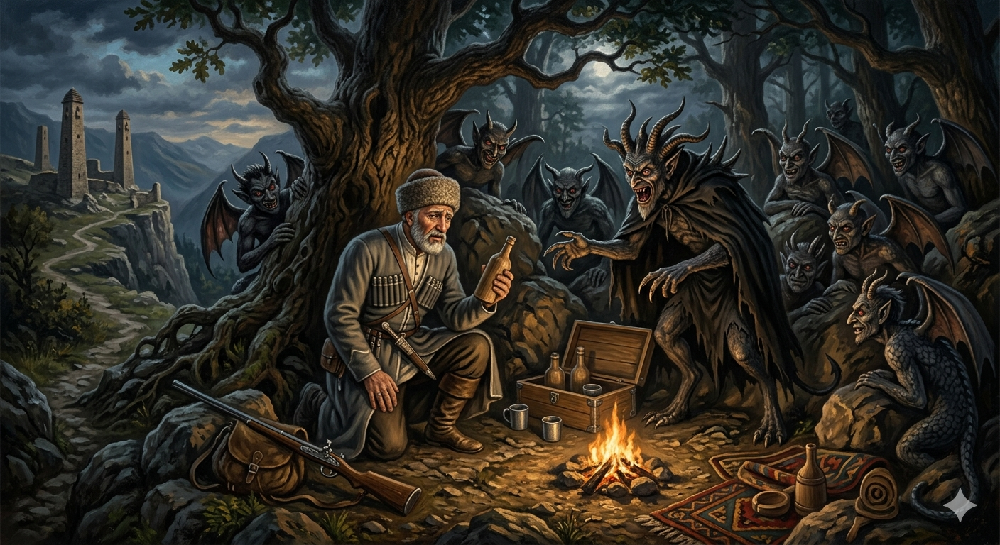

И.А. Дахкильгов. Хьехаме дувцарш - поучительные рассказы-притчи.
И.А. Дахкильгов. Хьехаме дувцарш - поучительные рассказы-притчи. Из ингушского фольклора.

Харжа хьайна
Эрий ара, бийсанна, тувла а венна виса хинна къонах тӀанийсавеннав цхьан йилбазий поала. Царех дикадар шийна даргдоацалга а ховш, ший ма хулла царех кӀалхаравала веннав из. ХӀама хиннадац. Цхьан цӀагӀа дӀачувигав из къонах. Йилбазаша аьннад цунга: - Гой хьона, укх чу йола ер тоам бола кхалсаги, из дӀара лела бери, шун тӀа латта къаракъа шушеи. - Гу, - аьннад. - Гуче, оаха маьрша вохийт хьо, кхаьннех цаӀ Ӏа дой. Е цу кхалсага низ бе беза Ӏа, е бер де деза Ӏа, е из къаракъа шуша дӀамала еза Ӏа. Цу кхаьннех цаӀ дича, оаха мукъ воалийт хьо. Уйла яьй къонахчо: уж бӀеха хӀамаш леладечул аттагӀа деций сона из къаракъа шуша дӀамелча. Вахарг мара вий со. ХӀама а дац, хьакхетаргва. Къаракъ хорж аз, аьнна, шуша дӀаерзаяьй цо. Чоапилг кӀалтӀаяьннай къонахчун. Кхалсага низ бе эттав из. Нана елхарах тӀадетталуш хинна бер лосттадаь дӀадахийтта денна хиннад. Къаракъо шийна тӀехьа цӀаккха а дикадар денадац!
РУССКИЙ
Выбирай
Шел по лесу охотник и угодил в руки скопища чертей. Никакого выхода у него не было. Завели они его в один дом и сказали: - Видишь, в этом доме красавицу-женщину, видишь, во-он бегает ребенок, видишь, на столе стоит бутылка водки? - Вижу, - ответил пленник. - Тогда, если хочешь уйти с миром и невредимым, сделай одно из трех: или изнасилуй женщину, или убей ребенка, или выпей водки. Мужчина решил: не лучше ли мне выпить водки, чем марать свои руки и честь. Подумаешь, выпью, протрезвею и уйду. Он сказал чертям, что выбирает водку. Выпил он бутылку водки и потерял разум. Начал он насиловать ту женщину. Видя, что мать отбивается и плачет, ребенок по-своему стал спасать ее. Мужчина отшвырнул ребенка так, что ударившись о стену, он скончался. Водка к хорошему не приводит.
ENGLISH
Choose
A hunter was walking through the forest when he fell into the clutches of a horde of devils. He had no way out. They led him into a house and said: 'Do you see the beautiful woman in this house? Do you see the child running about over there? Do you see the bottle of vodka on the table?' 'I do,' replied the captive. 'Then, if you want to leave in peace and unharmed, do one of three things: either rape the woman, or kill the child, or drink the vodka.' The man decided: wouldn't it be better for me to drink the vodka than to sully my hands and my honour? So what? I'll drink it, sober up and leave. He told the devils that he was choosing the vodka. He drank a bottle of vodka and lost his mind. He began to rape the woman. Seeing that his mother was fighting back and crying, the child tried to save her in his own way. The man hurled the child so hard that he hit the wall and died. Vodka never leads to anything good.
НОХЧИЙН
ПОГОВОРКИ
Дехкеваьннав моастагӀа эсала хийттар. Пожалеет тот, кто недооценит врага.Зудала ваьннача сага керта тӀа шайтӀа хов. На голову похотливого шайтан садится.Къинош Ӏоадар – жожагӀата бода никъ тоабар. Накапливать грехи – мостить дорогу в ад.Мала къонахчал эшац, мелча, эзделах ца вохара эш къонахчал. Не надо быть мужчиной, чтобы выпить; мужчиной надо быть, чтобы не опозориться.Маларца мерзвеннар наха къахьвеннав. Тот, для кого водка сладка, людям горек.Сихвенна даь хӀама балийна дийрзад. В спешке сделанное – горем обернулось.“Со морг мичав?” – яха къонах а, кхыметтале, набаро эшаваьв. Сон одолевает даже того, кто считает себя самым сильным мужчиной.Харца аьнна дош шурийла керчадича а цӀенлургдац. Неправедное слово, хоть очищай его в молоке, все равно останется грязным.Харцахьа хьайза хьастам нийсалургба, харцваьннар нийсве хала да. Погнувшийся гвоздь можно разогнуть, сошедшего с пути человека трудно исправить.Хьакха керчача керч веха саг. Пьяница валяется в той же луже, что и свинья.ХьунагӀа тувлавеннар наькъ тӀа варгва, хьаькъалах тувлавеннар хьакхетаргвац. Заблудившийся в лесу выйдет на дорогу, сошедшему с ума - ума не вернуть.Цкъа кхерах кхийтта ког ийссаза кхийттаб (цкъа лайжа ког ийссаза ловжаргба). Нога, раз споткнувшись, девять раз споткнется (раз поскользнувшаяся нога поскользнется девять раз).Эзде воацар кито гучавоаккх. Неблагородного видно по его поведению за столом.